Quentin Castel
Senior software engineer
Identity expert
About Me
Thinker, Problem solver, creativity
I am a passionate/developer advocado!
Problem solving innovation and new technologies are my main drivers I couldn't conceive my job without challenges or human interaction. I love helping and sharing with people I work with, also being part of at community of developers.
I am particularly interested by standards, as I believe their are the base of innovation and collaboration.
To promote the technology I work on, I have the pleasure to present at multiple meetups, in different countries. I am also keen on events like hackathon, as a participant or as aan organiser!
- Age30
- ResidenceUnited-Kingdom
- NationalityFrench
- AddressBristol
- e-mailmail@quentin-castel.fr
- AvailabilityPermanent job with ForgeRock
Contact me
There is plenty of reason to get in touch with me :) If you are looking for a speaker at your meetup or conference on a domain I know well. Also I am happy to dicuss and share ideas.
I am always happy to be contacted by email, slack or even better, having a coffee or a beer!
Bristol, UK
Resume
Quentin Castel - Master in Software engineering
Experiences
Aug 2014 - Current
 ForgeRock
Identity software company.
Oct 2017 - Present
Technical Lead, Open Banking Reference Implementation
OBRIStarted this project as a POC, to demonstrate that Open Banking can be implemented using ForgeRock stack. After presenting it in London, OBIE contacted ForgeRock to partnership in building a model bank. Since it evolved as a SAAS offering for banks to hit the PSD2 deadline https://www.forgerock.com/open-banking-sandbox. It is also used as an Open Banking reference architecture for our ForgeRock customers.
The team has now grown significantly and my role as move to Open Banking expert and engineering technical lead.
We leveraged CI/CD best practices along with Kubernetes as a platform to deploy micro-services. We support the community that uses the sandbox via the official open banking slack channel.
- Java
- Spring
- Angular
- Typescript
- Codefresh
- GITHUB
- MongoDB
- GIT
- Docker
- Kubernetes
- GCP
- Certificates
- EIDAS
- MATLS
- OAuth2
- OIDC
- JOSE
- FAPI
- Open Banking UK
Jan 2016 - Oct 2017
Senior Sustaining engineer
AM.Support and maintenance of the identity provider AM. As a software engineer, my role consisted in:
- Troubleshooting AM and fixing complex engineering issues/design.
- Working on AM compliance for OIDC.
- Releasing multiple sustaining versions of AM.
- Improving release process.
- Building internal tools (Intellij, ZenDesk, Jira plugins).
- Working on security releases.
- Java
- Maven
- JIRA
- Jenkins
- GIT
- Intellij SDK
- Jira SDK
- Zendesk SDK
- OAuth2
- OIDC
- JOSE
Aug 2014 - Jan 2016
Support engineer
AM.Direct interaction with ForgeRock customers/industry partners helping them resolve technical issues with our products, and often across their deployment architecture as a whole.
- Java
- Zendesk
- Communication skills
Jun 2014 - Aug 2014
AKKA
Contractor, BristolBetween the moment I quite my previous job and found my next role in ForgeRock, I had the opportunity to take a short contract with AKKA, my wife’s company.
AKKA is a sub-contracting company, working mainly with Airbus. The mission was to review their existing workflow/tool and propose a software solution more modern.
The mission scope was:
- Collecting requirements from managers / engineers
- Evaluating Open Source softwares to base the solution - We choose Redmine
- Configuring and customising Redmine to answer the requirements
- Presenting the solution to AKKA managements - successfully received
- Deploying on service - high available
Initially used for their branch in UK Aeroconseil (50 employees), the solution is now deployed more globally in AKKA group with a dedicated engineering team.
- Redmine
- Ruby
Nov 2013 - Apr 2014
GoodMorningPlanet
Startup, ToulouseSoftware engineer for a startup goodmorningplanet.com, a social network dedicated to travellers. I was in charge of the back-end algorithms for developing artificial intelligence. We used python with Django, based on Postgres SQL with Postgis. I worked on Graph algorithms and mathematical theory in order to improve user experience in our large database.
Unfortunately ended this adventure to follow my wife in England.
- Python
- Django
- Postgres
- Graph algorithms
Dev 2012 - Nov 2013
Living Objects
Backend Software engineerWorking as a Java engineer for a small firm, specialised in Network performance analysis for a French Telecom network. The backend had to manage a huge data computation, with high time constraints. My work was to design multi-threading software, with optimised algorithms highly performant, to handle large sets of data every seconds.
In a small firm like LivingObjects, principal engineers had to be polyvalent. My responsibilities covered: deployment in our client servers, leading back-end modules, developing R&D intelligence with a Phd Student, doing maintenances in different servers, helping recruiting and training new back-end engineers, participate in hardware architecture.
- Java
- Mysql
- ANT Scripting
- GIT
Jun 2012 - Dev 2012
Airbus Defence and space
Software engineer internship, ToulouseSoftware programming in ACE41 User Ground Segments services, in a R&D international project (UK - DE - FR). Achieved tasks : spatial multi-system model in Java and external tools features (3D export with STK AGi, SQL api, XML exportation, and more).
- Java
- Eclipse
- ENTREPRISE ARCHITECT
- XML
- SQL
- STK AGI
Jan 2012 - Apr 2012
3D laboratory
PolyMTL, MontréalPart-time in the 3D Graphics Laboratory. Polytechnique of Montreal (Polymtl) has a virtual environment : a helmet mounted display and a 3D glasses with four computers displaying each one a different screen of the scene (left, right, front and down). It allows the user to interact with the programme by moving on it and see 3D objects. It was a distributed system in a graphics 3D context developed in C++.
- C++
- OpenGL
Jun 2011 - Aug 2011
IFREMER
Software engineer internship, BrestDesigned a bathymetry files analyser in Java, based on NetCDF format with a IFREMER Standard. In parallels, I developed a 3D seabed modelling, with graphic optimisations in order to increase the map resolution with a good fps. (OpenGL with shaders).
- Java
- Swing
- JOGL
- GLSL
- NetCDF
Jul 2010 - Aug 2010
Generads
Beta-tester and PHP developer, BordeauxBeta-tester and developer, a startup in advertising analysis with Adwords.
- Php
- Mysql
- JS
- HTML/CSS
Coding Skills
Java
Spring
Angular
GIT
Certificates
Standards
OAuth2/OIDC
Open Banking
JOSE (JWT, JWS, JWE, JWK)
DevOps
Linux
Docker
K8
CI/CD
Education
2011-2012
Software engineer Degree, Grade A
Last year of my master, as part of the student exchange program, for completing my master.
PolyMTL is allowing students to choose their courses. The courses I enjoyed the most:
- PHD course in quality of software engineering.
- Mobile development, building a game for android. From scratch to the android store
- Embedded system, as for example implementing the logic of a router on microchip.
- Virtual reality programming, on headset and multiple-screens projected on the room.
- Distributed system, the efficiency of codes running in multi-core and different servers
2009-2011
Software engineer Degree, Grade A
 ENSEIRB-MATMECA IPB, Bordeaux
ENSEIRB-MATMECA IPB, Bordeaux
ENSEIRB is part of the “Grandes écoles”, higher education establishments in France known to be highly selective, elite, and prestigious institution.
The master degree cover all aspects of software engineering, for instance:
- Algorithm, Graph theory.
- Cryptography.
- >Advance networking concepts.
- Quantum computing.
- System programming.
2007-2009
Mutli-licenses
Preparation programme for the “Grandes écoles”. The most challenging years of my education by far. The programme consisted of 1800 hours of courses in 2 years, which include the major subjects of the other university programmes:
- Mathematics.
- Physics and chemistry.
- Mechanics.
- Computer sciences.
At the end, students get a degree in the 4 above specialities
The best way to describe it is that you do the 4 licenses at the same time